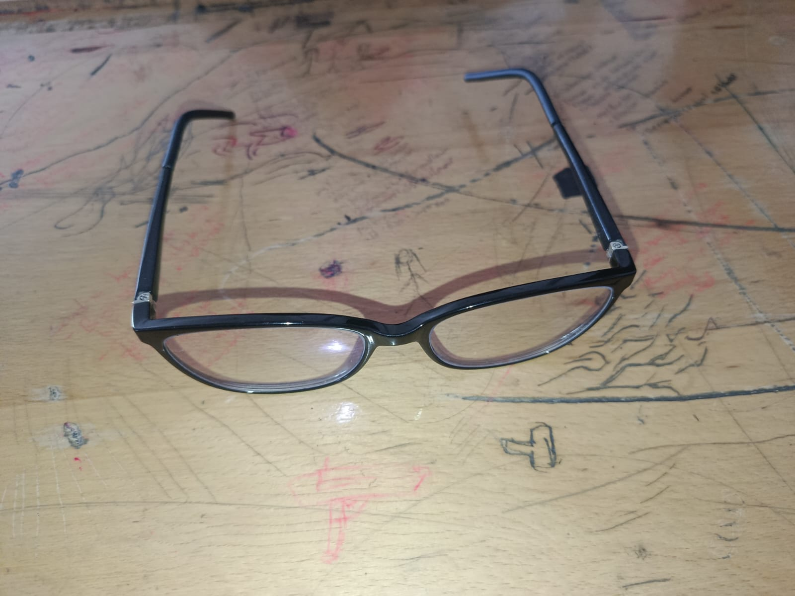
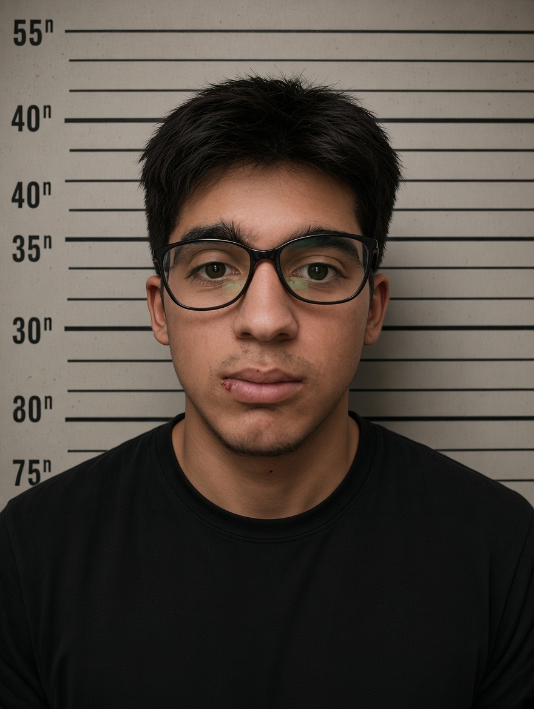

01 / OLAYA KONU OLAN EŞYA

Eşyanın kayıtlı sahibi
Hiranur
Söz konusu gözlük hakkında incelemeler
mizah amaçlı devam etmektedir.
02 / DOSYADAKİ ŞAHIS

Dosyadaki kişi
KİMLİK TESPİTİ BEKLİYOR
Dedektifler henüz çay molasından dönmedi.
🚨 GÖZLÜK KRİZ MASASI TOPLANDI 🚨
03 / RESMÎ (!) RAPOR
SUÇLAMA: Gözlük vakasıyla ilgili
açıklığa kavuşturulması gereken meseleler.
ŞÜPHELİ DURUM: Gözlüğün nerede
olduğu ve nasıl el değiştirdiği merak konusu.
MAĞDUR: Hiranur'un gözlüğü.
KARAR: Mahkeme heyeti teneffüse
çıkmıştır. Duruşma belirsiz bir tarihe ertelenmiştir.
🕶️
Dosya henüz kapanmadı!
Gözlük bulunduğunda tüm dünya rahat bir nefes alacak.
En azından sınıf.